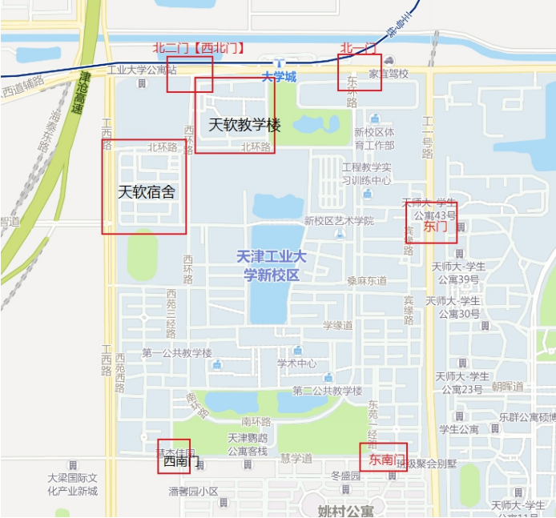

天软生存指南
关于行的问题：
学校开放的校门口
学校一共开放得几个门如下图

西南门与东南门之间的校外一条街是小吃街。地毯小吃，还有摆地摊的，夜市，再往那边走就是姚村公寓，路边有餐馆，火锅，按摩，酒吧，网吧等等，晚上没事可以去逛逛吃饭，玩去。
地铁：一般天软学生出去都从北二门出去，沿着马路走就是地铁站，大学城地铁站就在旁边，非常方便，想去哪玩去哪里玩！

 |
姓名： | 李庆锐 |
| 学号： | 2150411017 |
学校一共开放得几个门如下图
西南门与东南门之间的校外一条街是小吃街。地毯小吃，还有摆地摊的，夜市，再往那边走就是姚村公寓，路边有餐馆，火锅，按摩，酒吧，网吧等等，晚上没事可以去逛逛吃饭，玩去。
地铁：一般天软学生出去都从北二门出去，沿着马路走就是地铁站，大学城地铁站就在旁边，非常方便，想去哪玩去哪里玩！